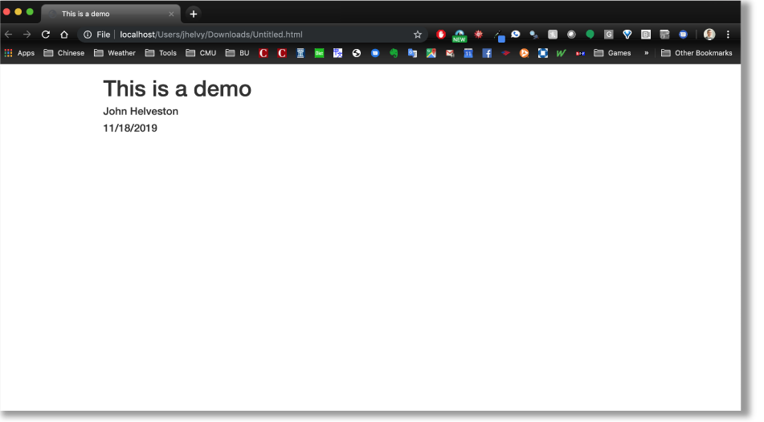

Data Analysis 4 - Communicating Information
Learning Objectives
- Be able to manage computational projects for reproducibility, reuse, and collaboration.
- Use R tools and conventions to document code and analyses and produce reproducible reports.
- Be able to publish, share materials, and collaborate through the web.
- Understand why this all matters!
Suggested Readings
- R Markdown: The Definitive Guide, by Yihui Xie, J. J. Allaire, and Garrett Grolemund
- RMarkdown Cheatsheet
1 Literate programming
Literate programming is a paradigm first introduced by Donald E. Knuth. The idea is simple:
Treat programs as a literature understandable to human beings
The goal is to integrate data analysis (executable code) with textual documentation, linking data, code, and text together in one document. Literate programming can be directly linked to the concept of reproducibility. Basically, for someone to make a legitimate scientific claim, they should at minimum be able to fully reproduce their results from their raw data (and preferrably others should be able to reproduce them as well).
This leads to the idea of having a reproducible workflow - from raw data to published results.
Enter RMarkdown
RMarkdown integrates a
documentantion language (markdown) with a
programming language (R). This enables
authors to craft interactive documents of data, analysis, and results
that are easily shareable, particularly through the web.
2 Rmarkdown overview
Watch this 1-min video to get a quick sense of what RMarkdown is:
What is R Markdown? from RStudio, Inc. on Vimeo.
…and watch this 1.5 min video to witness the horrors of not using a reproducible workflow:
3 Elements of RMarkdown

3.1 Markdown
Markdown is a simple, plain text language for converting raw text to HTML for the web (and other outputs, like pdfs). Some of its attributes include:
- It has a very small syntax (html links, tables, images, headers, italic / bold font, and a few other things).
- It is both easy-to-read and easy-to-write.
- It is clean and legible across multiple platforms (including mobile phones).
- All formatting is handled automatically through a browser.
- Supports raw html as well.
3.2 Code
Code “chunks” are defined through special notation and are executed
in sequence throughout the document (just like an .R
script). You can mix code directly in with markdown (e.g. “Here’s some
simple math in R: 2 + 2 produces 4”) or in separate chunks
before or after markdown text. This enables you to write English
language text in markdown to explain something, and then immediately
follow it up with code to illustrate or demonstrate it.
RMarkdown currently supports a number of different Language
Engines through the knitr package, including:
- R (default)
- Python
- SQL
- Bash
- Rcpp
- Stan
- JavaScript
- CSS
3.3 Outputs
The knitr package enables you to “knit” together the
markdown text and R code into a variety of output formats. The default
format is an html document for reading through an internet browser and
sharing results across the web. Check out the RMarkdown Gallery
for some examples. Other formats include:

3.4 Publish to the web
Once you’ve written up your RMarkdown document, you can publish it to the web for free using RPubs: http://rpubs.com/
Watch this quick demo of how to publish your markdown file to the web using RPubs:
4 Elements of a
.Rmd document
4.1 The YAML header
The yaml header contains metadata about the document - most
importantly the output. Different settings can be set within different
outputs. Here we’ll be focusing on on the html_document
output.
It is contained between these separators at the top of the file.
---
---Markdown was originally designed for HTML output, so it may not be
surprising that the HTML format has the richest features among all
output formats. To create an HTML document from R Markdown, you specify
the html_document output format in the YAML metadata of
your document:

At a bare minimum, your yaml should include a title and output format. Here I’ve also included my name as the author, and the date:
---
title: "This is a demo"
author: "John Helveston"
date: "11/18/2019"
output: html_document
---This will produce an html page that looks like this:

4.2 Markdown basics
The text in an R Markdown document is written with the Markdown syntax.
Check out this 60-second markdown reference guide to get the basics
If you’re not sure how to make something in markdown, you can try it out first with this handy markdown demo site.
Here’s some of the most-used markdown syntax:
| Type this… | …to get this |
|---|---|
normal text |
normal text |
*italic text* |
italic text |
**bold text** |
bold text |
***bold italic text*** |
bold italic text |
superscript^2^ |
superscript2 |
~~strikethrough~~ |
|
`code text` |
code text |
For headers, use the # symbol:
# Header 1
## Header 2
### Header 3
#### Header 4
##### Header 5
###### Header 6
To make a bullet list, use the -
symbol:
- first item
- second item
- third item- first item
- second item
- third item
To make a numbered list, use numbers with a period:
1. first item
2. second item
3. third item- first item
- second item
- third item
To make a url link to another site, use brackets with parentheses:
[Download R](http://www.r-project.org/)To make a basic table, use the | symbol
to break up columns, and make a header row by adding
-------- underneath the header row:
Table Header | Second Header
------------- | -------------
Cell 1, 1 | Cell 2, 1
Cell 1, 2 | Cell 2, 2| Table Header | Second Header |
|---|---|
| Cell 1, 1 | Cell 2, 1 |
| Cell 1, 2 | Cell 2, 2 |
Check out this handy online table converter
4.3 Inline R code
You can embed R code directly in a markdown sentence. For example, if
you had already created an object x…
x <- 10…you could use x in a sentence by typing a
` followed by r then any R code you want:
The value of parameter `x` is `r x`, and `2*x` is `r 2*x`The value of parameter x is 10, and 2*x is
20
Wow - that’s pretty cool!
4.4 R Code chunks
Code chunks are blocks of R code that are executed when you compile
the .Rmd document. The output of the code is inserted into
the RMarkdown document. Chunks can be used as a means to render R output
into documents or to simply display code for illustration (e.g. with
option eval=FALSE).
Here’s an example of a .Rmd file with a code chunk on
the left and the rendered output on the right:

You can quickly insert an R code chunk with:
- The keyboard shortcut
Ctrl + Alt + I(OS X:Cmd + Option + I) - The Add Chunk
 command
in the RStudio toolbar
command
in the RStudio toolbar - By typing the chunk delimiters
```{r}and```.
4.4.1 Chunk notation
In between the chunk delimiters ```{r} and
```, you can write R code:
```{r chunk-name}
cat('hello world!')
```The above R chunk renders as:
## hello world!You don’t have to name the chunks, but it’s a good practice (like commenting your code). In the above chunk, the name of the chunk is “chunk-name”.
4.4.2 Chunk options
There are lots of options for customizing how markdown chunks appear. By default, code chunks print code + output:
cat('hello world!')## hello world!But you can change this by inserting options immediately after the
r in the header ```{r} and separate them with
commas. For example, if you just want to display the code but don’t want
it to actually run, you can add eval=FALSE:
```{r, eval=FALSE}
cat('hello world!')
```If you only want to print the output (i.e. run the
code, but don’t show the code itself), use echo=FALSE:
```{r, echo=FALSE}
cat('hello world!')
```Finally, if you want to run the code in the background but you don’t
want anything to print, use include=FALSE:
```{r, include=FALSE}
cat('hello world!')
```There are loads of other options for controlling how R chunks behave - here is a list of some (for more details see http://yihui.name/knitr/):

4.5 Plots
By default, figures produced by R code will be placed immediately
after the code chunk they were generated from. Here’s an example using
ggplot2 to plot the relationship between a couple of
variables:
```{r, message=FALSE, fig.height=4, fig.width=6}
library(ggplot2)
library(gapminder)
ggplot(gapminder) +
geom_point(aes(x = gdpPercap, y = lifeExp, color = continent), size=0.8) +
theme_minimal()
```library(ggplot2)
library(gapminder)
ggplot(gapminder) +
geom_point(aes(x = gdpPercap, y = lifeExp, color = continent), size=0.8) +
theme_minimal()You can adjust the dimensions of plots using fig.height
& fig.width inside the chunk settings. For example, in
the above plot the setting are
{r, fig.height=4, fig.width=6}.
5 Tips
5.1 Knitting to other output formats
As previously mentioned, the default output format for RMarkdown
documents is html, but you can change this by adjusting the YAML
output. For example, if I wanted to create a pdf document
instead, I could use pdf_document in the YAML:
---
title: "This is a demo"
author: "John Helveston"
date: "11/18/2019"
output: pdf_document
---5.2 Convert a data frame to a table
If you have a table already organized as a data frame in R, rather
than painstakingly type the content into a typical markdown table, you
can just use the kable() function to directly convert it.
Here’s an example using the beatles data frame from the
earlier lesson on data
frames:
beatles <- data.frame(
firstName = c("John", "Paul", "Ringo", "George"),
lastName = c("Lennon", "McCartney", "Starr", "Harrison"),
instrument = c("guitar", "bass", "drums", "guitar"),
yearOfBirth = c(1940, 1942, 1940, 1943),
deceased = c(TRUE, FALSE, FALSE, TRUE)
)
kable(beatles)| firstName | lastName | instrument | yearOfBirth | deceased |
|---|---|---|---|---|
| John | Lennon | guitar | 1940 | TRUE |
| Paul | McCartney | bass | 1942 | FALSE |
| Ringo | Starr | drums | 1940 | FALSE |
| George | Harrison | guitar | 1943 | TRUE |
5.3 Inserting a Python code chunk
One of the most impressive things about RMarkdown code chunks is that
the code itself doesn’t have to be R code. For example, if you want to
use Python code instead, just change {r} to
{python} in the code chunk:
'In Python, you can concatenate strings' + ' like this!'## 'In Python, you can concatenate strings like this!'6 Additional Resources
Reproducible Research coursera MOOC
Page sources:
Some content on this page has been modified from other courses, including:
George Washington University | School of Engineering & Applied Science
Dr. John Paul Helveston | jph@gwu.edu | Mondays | 6:10–8:40 PM | Phillips Hall 108 | |
This work is licensed under a Creative Commons Attribution 4.0 International License.
See the licensing page for more details about copyright information.
Content 2019 John Paul Helveston